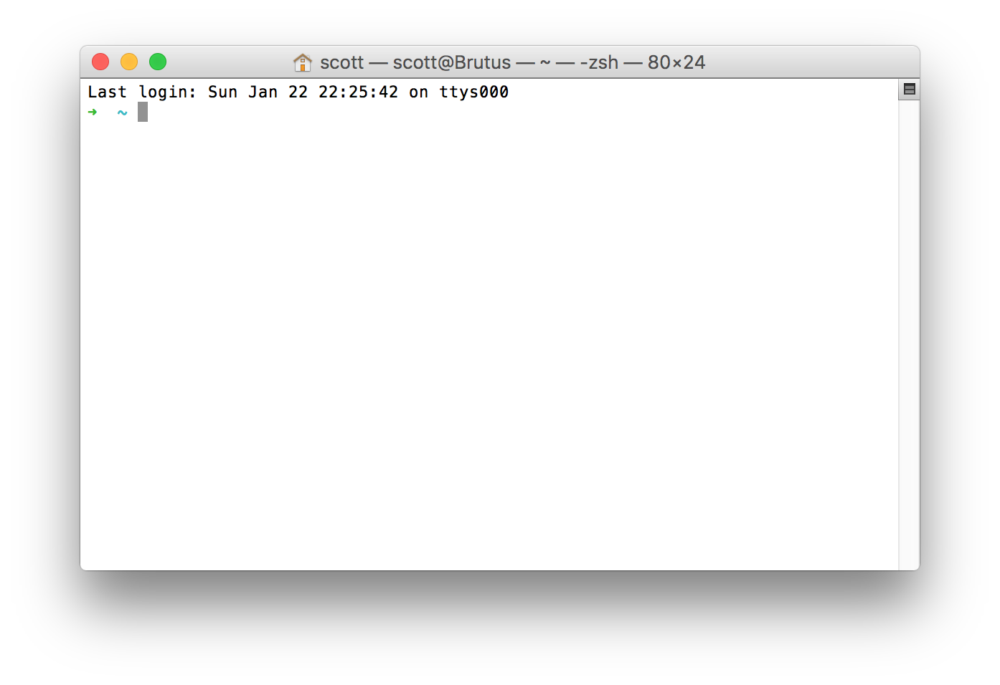
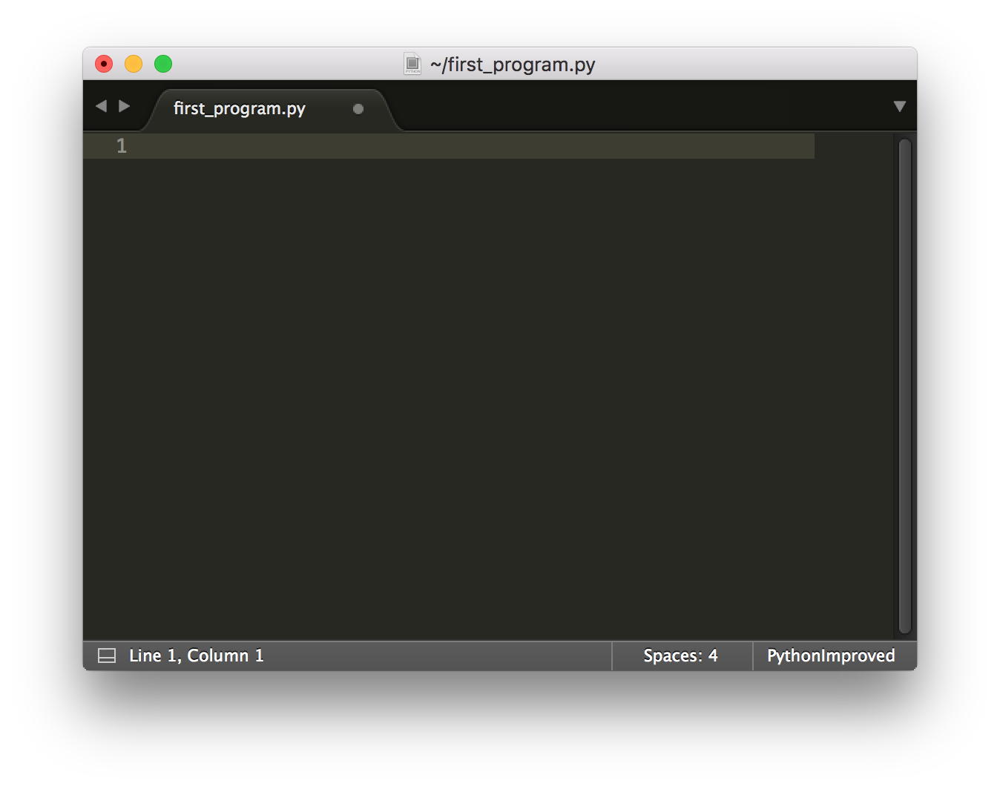
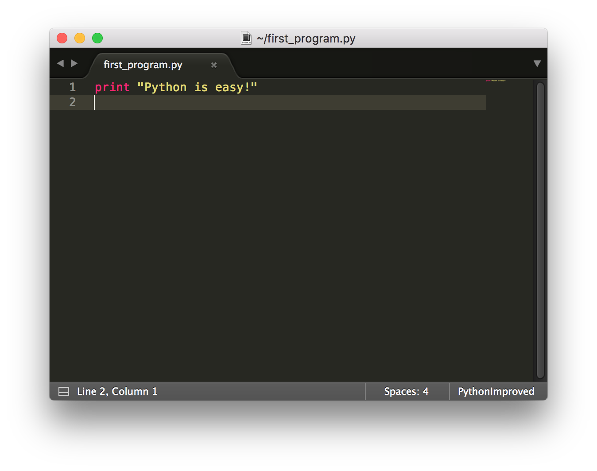
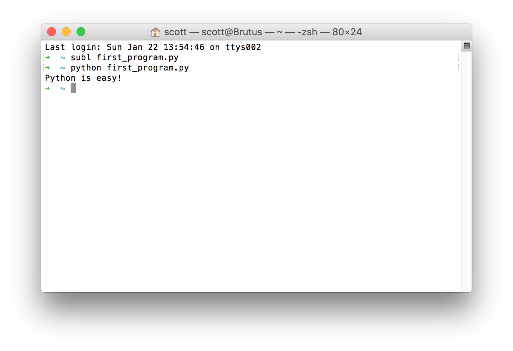

Hello and welcome to your first day at Moringa School's web programming in Python course! Here is what you can expect going forward:
We will only need three things for our first few days
On our Ubuntu computers, we will already have the first two preinstalled. For a text editor, we will be using Sublime Text. We can install it here [https://www.sublimetext.com/3]
One last thing we will need to do is to enable the ability to run Sublime Text from the command line, to do this, open the terminal by going to "Utilities->Terminal".
It will open and look something like this.

Copy and paste this line into the terminal and hit enter
ln -s /opt/sublime/sublime_text ~/subl
For now, don't worry about what that did. We'll go over what the terminal is momentarily and will spend an entire day learning how it works later this week.
To check whether it worked, quit the terminal application and open it again. When we type subl, the terminal will output a large block of text specifying what subl is and how it works. Don't worry about this either! For now, we know that it works and we are ready to write a program!
We'll start by writing what might be the simplest Python program in the world. Go back to the terminal, type subl program_1.py and hit enter. Sublime text will open with a new file called program_1.py. At first, this will be a blank file that looks something like this.

On the first line, type:

It is important that:
print correctlyPython is easy! with quotes (") like "Python is easy"print and the text we are printing.Let's save our file and quit Sublime Text. In the terminal, type python program_1.py. If we did everything right, we will see Python is easy! written on the next line like this.

Congratulations! We just wrote our first program! If something went wrong, let an instructor know and we'll come help you out.
Computers aren't as smart as you might think. In fact, they're rather stupid in many ways! They can run simple commands but not much else. What sort of commands can a computer run?
Python is easy!If we want to do something more complicated than this, we need to write a bunch of these commands. By chaining together commands, one after the other, a computer can do complicated things like
Python is a programming language that has the advantage of being both easy to learn and very widely used. On github, a popular programming website, Python is the third most popular language, behind only Javascript (which we will also learn), and Java (which isn't very good for building websites). YouTube is written in Python. So is Instragram. But it goes far beyond building websites. Python has been used for everything from building video games to predicting the weather. Like all programming languages, Python also has it's disadvantages. Most importantly, it is slower than most other languages. In practice, modern computers and phones are so fast that it doesn't matter for anything that we will learn in this course.
The terminal is a way to give commands to a computer. It is more than just another application on your computer. It is an alternative to your computer's desktop or the UI on your Android phone. In fact, some computers don't even have a desktop, they only have a terminal! Becoming comfortable with it is essential to this course and is something we will cover over the next few days.
Let's open the terminal and type subl program_2.py. (Note that .py is short for Python). In Sublime Text, enter this program. Again, be sure to write it exactly as it is shown here.
today = "Monday"
print "Today is"
print today
I bet you can figure out what this program is going to do but let's run it anyway to make sure. Go back to the terminal and type
python program_2.py
This three line program does three things:
today as a variable in the computer memorytoday out of computer memory and prints that too.Unlike what you might remember from math class, in programming languages = is used as an "assignment" operator. Anything on the left of = gets assigned the value of what's on the right.
Easy right? Let's see what other kinds of things we can do with variables.
We can use variables as many times as we like
today = "Monday"
print "Today is"
print today
print "The day before tomorrow is"
print today
We can reassign variables
day = "Tuesday"
print "Today is not"
print day
day = "Monday"
print "The day is actually"
print day
If we don't end up using a variable, no big deal
variable = "This variable will never see the light of day"
print "I'm the last line of this program!"
Errors, also known as bugs, are common. When you are learning, you can expect to make a lot of them. If you get one, don't worry! We all made them and even experienced programmers can expect to make dozens every day. Lucky for us, Python is nice enough to tell us what we did wrong and where the problem is! Let's make one on purpose to see how this works. In a new file, write these lines.
print "Python is easy!"
print "Hi, my name is"
print name
In this case, we haven't told the computer what is assigned to name so it isn't going to know what to print! Save this as program_3.py and run it. We will see:
Python is easy!
Hi, my name is
Traceback (most recent call last):
File "program_3.py", line 3, in <module>
print name
NameError: name 'name' is not defined
Notice a few things about this.
File "program_3.py", line 3.print name.NameError: name 'name' is not defined. In most cases, like this, the error will be self-explanatory. Sometimes, we'll have to think about it to figure out what went wrong.Let's try another kind of error. Earlier we were extra-careful that our text, Python is easy, had quotes around it. Let's see what happens when it doesn't! On the command line, type subl program_3.py to edit our program. Delete the end-quote of the second line so that our program looks like
print "Python is easy!"
print "Hi, my name is
print name
Run it again. We will see
File "test.py", line 2 print "Hi, my name is ^ SyntaxError: EOL while scanning string literal
Again, Python is showing us where the problem is ("test.py", line 2). It even points to where we need a quote using the ^ character! It then tells us that we have a "SyntaxError: EOL while scanning string literal". SyntaxError is just a fancy way of saying that what we wrote isn't valid in the Python Language and that Python can't understand it. Don't worry about the rest of the text for now. We'll get to what that all means over the next few days.
What else is different about this error? Even though our error was on the second line, Python didn't run the first line! And this makes sense. If Python can't understand the language that is coming in, it can't do anything at all.
From now on, we'll see examples of common errors colored in red like this
print "Python is easy!"
print "Hi, my name is
print name
Let's look at some other simple things we can and can't do in Python.
Print is a keyword in the python language. It must be spelled correctly
prnt "Python is easy!"
Commands can only do one thing
day = "Monday"
print "Today is" day
Each line can only do one thing
day = "Monday"
print "Today is" print day
We CAN combine things together though using the + operator
day = "Monday"
print "Today is " + day
Assignment only goes one direction. It doesn't work the other way
"Monday" = day
print "Today is " + day
Variables can be any combination of letters, numbers, and underscores
NaIrObI_2028 = "Olympic games?"
They can't be just numbers though
2028 = "Olympics?"
Variables can be assigned to other variables and combined in all sorts of ways
noun = "Moringa"
my_school = noun
verb = "Studying"
what_I_am_doing = verb + " at " + my_school
complete_sentence = "I am " + what_I_am_doing
print complete_sentence
Sometimes whitespace matters
print"this looks funny and won't work either"
print "Indentation is important in Python!"
Most of the time, it doesnt
itTurnsOut="SpacesUsuallyDoNotMatter"
print "Can You scrunch things?"+itTurnsOut
print "This"+"Looks"+"Funny"+"And"+"Is"+"Hard"+"To"+"Read"+"Though"
print "Also, you can have blank lines"
print "Use as many as you need to organize your code"
Variables can be all sorts of things, for example, numbers
five = 5
print five
pi = 3.145926
print pi
Math is easy with Python!
five = 5
ten = five + five
one_hundred = ten * 10
fifty = one_hundred / 2
forty_nine = fifty - 1
print forty_nine
print forty_nine * 10
We cannot, however, combine numbers and text together
ten = 10
print "5 + 5 = " + ten
(There are actually ways to combine them together, which we'll see later.)
Functions are a way to break-up longer programs, organize our code, and do things repeatedly. Let's see a simple example.
def say_snake():
print "snake"
print "A python is a type of"
say_snake()
Go ahead and try this. Our program will output
A python is a type of
snake
Let's see some more examples.
Functions must have a colon
def say_snake()
print "snake"
print "A python is a type of"
say_snake()
And they must be indented.
def say_snake():
print "snake"
print "A python is a type of"
say_snake()
Four spaces is the most common but any number works. Occassionally, people use two spaces
def say_snake():
print "snake"
print "A python is a type of"
say_snake()
We can have as many lines as ee want in a function
def three_fruits():
print "apple"
print "orange"
print "banana"
three_fruits()
Functions can have an argument which is just a variable. This variable can be of any type.
def make_simon_say(word):
print "Simon says " + word
def square(x):
print x * x
make_simon_say("chocolate")
square(5)
Multiple variables are also possible. Just use a comma
def times(x, y):
print x * y
times(7, 9)
Anything, that can be done in the main program, can be done in a function. For example, we can reassign variables
def verb_it(word):
word = word + "ing"
print word
verb_it("Cook")
Or even call other functions!
def number_of_toes(toe_count):
print toe_count
print "toes"
def number_of_fingers(finger_count):
print finger_count
print "fingers"
def how_many_fingers_and_toes_do_humans_have():
print "humans have"
number_of_toes(10)
print "and"
number_of_fingers(10)
how_many_fingers_and_toes_do_humans_have()
Functions are more useful when we use the return statement
def times(x, y):
return x * y
print "8*100 equals"
print times(8, 100)
print "2*3*4 equals"
print times(2, 3) * 4
print "5*6*7*8 equals"
five_times_six = times(5, 6)
print five_times_six * times(7, 8)
In addition to being able to write our own functions, Python has many functions built-in as part of the language. One of those is called raw_input(). Let's see how it works. Type this in a new file.
print "Write something"
something = raw_input()
print "You wrote " + something
Run the program with python. We will see "Write something" but the program doesn't complete. This is because it is waiting for our input. Type "echo" and hit return. We will see "You wrote echo". Congratulations, we've built our first interactive program!
Raw input can also take a prompt as an argument.
age = raw_input("How old are you?")
print "You are " + age + " years old"
Earlier, we learned that we can't mix text and numbers together. For example, this doesn't work.
print "The square root of four is " + 2
This is because text and numbers are processed differently by computers. And it's not even safe to say all numbers are processed the same way! Let's look at the different types of variables we've encountered so far.
"String" is the way we say "text" in the programming world. It is the term we will be using from now on. They are called strings because they are actually composed of individual characters joined together. So the string, "Tea", is composed of the characters "T"-"e"-"a", joined together. When we execute the command "Tea" + "Cup", what we are doing is linking the string "T"-"e"-"a" to the string "C"-"u"-"p" to generate the new string "T"-"e"-"a"-"C"-"u"-"p".
To convert anything into a string, use the str() function like
print str(10.5)
print str(3) + "+" + str(2) + " = " + str(5)
"Integers" or "ints" are whole numbers like 7, 0, -32, and 3783426. In practice, these are the most common types of variables in programming.
To convert anything into an integer, use the int function like
print int("10") + 5
print "= 15"
"Floating point numbers" or "floats" are numbers that have a decimal point like .2, 95.7, 1.0 or .00000032. For a computer, doing math on floats is different than doing math on integers so they are treated differently internally. The important thing to remember about floats is that for many decimal numbers, it is impossible to store the entire number in a variable. For example, the number 5.0/6.0 is ".8333333333....". This float has an infinite number of 3s and we can only store so many. Because of this, we are going to get rounding errors
To convert anything into a float, use the float function like
print float("3.5") + 2.5
print "= 6.0"
print float(12)
print "= 12.0"